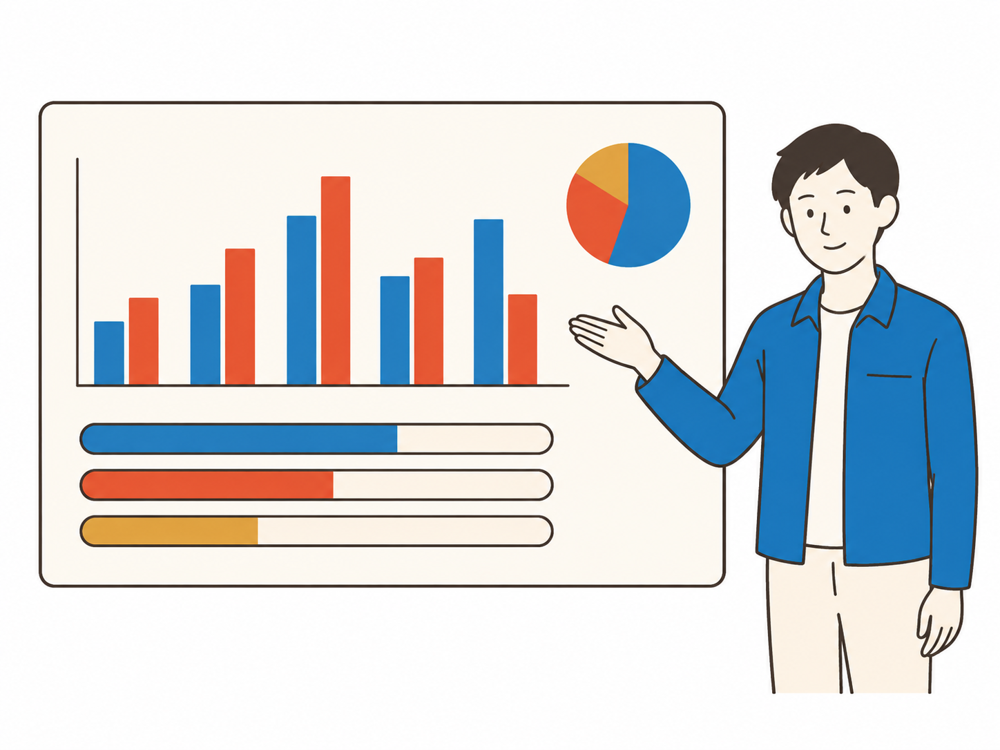

注文は自分で、
支払いだけまとめたい。
お弁当は自分で選べるけれど、注文ごとの支払いや立替精算を減らしたい方に。
通常の一括精算一括精算の詳細を見る →くるめしコンシェルジュが、お弁当選びから注文までを代行。月ごとの請求書をまとめ、部署・従業員ごとの利用実績の可視化も、ご希望に応じて対応します。
初期費用・月額固定費・個別サポート費用は無料です。アカウント数にも上限はありません。
自分で注文して支払いをまとめたい。手配を相談したい。社内の利用を整理したい。今の使い方とお困りごとに合わせて、利用方法をご案内します。
お弁当は自分で選べるけれど、注文ごとの支払いや立替精算を減らしたい方に。
通常の一括精算一括精算の詳細を見る →店舗選びや発注を、担当者に相談したい方に適しています。
大口・継続発注の相談手配のサポートを見る ↓複数部署のお弁当利用を把握し、請求のまとめ方や実績の集計を整えたい方に。
管理・経理の相談管理のサポートを見る ↓手配と管理、両方のご相談も一つの窓口で。
利用条件や社内のルールを伺い、必要な手続きと運用方法をご案内します。

お弁当を手配する方へ
「候補が多くて選べない」「社内イベントの大量発注を一人で進めるのが不安」
くるめしコンシェルジュが、イベントの目的や参加する方について伺い、シーンに合う店舗・お弁当をご提案します。候補選びから注文代行まで対応し、連日・定期的な手配もお手伝いします。
食事への配慮事項や配送条件は、対応可否を確認しながら進めます。
手配について相談する
精算・経理を担当する方へ
「注文が増えるほど請求書が増える」「立替払いの領収書を集めるのが大変」
注文ごとの支払いを月ごとの請求にまとめ、経費精算や請求書確認の手間を減らします。会社全体でまとめるか、部署・プロジェクトごとに分けるか、ご希望の管理方法に合わせて事前に確認します。

管理部門・経理の方へ
「請求額の内訳を確認したい」「承認した予算と実際の利用額を比べたい」
部署・従業員ごとの利用実績の可視化や、予算と実績の比較を、ご希望に応じて個別に対応します。確認したい内容を伺い、レポートの項目・形式・提供頻度を一緒に決めます。
※可視化・レポートはご希望に応じた個別対応です。条件によっては対応できない場合があります。
請求・利用管理について相談するくるめし弁当の掲載ラインナップ
※2026年9月17日時点
参加人数や日程に合わせたお弁当選びと手配を相談。
連日の手配や現場ごとの条件を担当者と確認。
大人数の食事やお届け条件をまとめて相談。
各部署の発注と請求の運用を整理。
フォームからお申し込みください。
ご希望の機能や運用方法を確認します。
審査と必要な設定の完了後、ご利用いただけます。
利用シーンや頻度、請求書をまとめる範囲、利用者の登録方法を確認します。可視化をご希望の場合は、集計項目・形式・提供頻度もご相談のうえ決定します。審査の結果、ご利用いただけない場合があります。
※お弁当代・配送料などは、ご注文内容や店舗の条件によって異なります。
手配のご相談は人数・予算・利用日・お届け先を、管理のご相談は利用部署・請求のまとめ方・把握したい項目をお知らせください。未定の項目は、その旨をお伝えください。
初期費用・月額固定費・注文代行や個別支援のサポート費用は無料です。お弁当代・配送料は別途かかります。アカウント数に上限はありません。
はい。必要な支援からご相談ください。両方をまとめてご相談いただくこともできます。
現在のご利用状況を伺い、法人向けサービスに必要な手続きをご案内します。
一度に多くのお弁当を手配する場合だけでなく、連日・定期的な手配もご相談いただけます。必要な数量・利用頻度・予算を伺い、対応可否と条件をご案内します。
お届け先・希望日時・数量・店舗によって異なります。相談時にお届け先の住所と利用予定日をお知らせください。店舗や配送の条件を確認してご案内します。
一括精算、大口・継続発注、管理・経理。利用シーンとご希望を伺い、あなたに合う利用方法を整理します。